ITER Equilibrium im Cylindrical Coordinates
Load Dependencies
using CairoMakie
using GeometricIntegrators
using LaTeXStrings
using LinearAlgebra
using ChargedParticleDynamics
using ChargedParticleDynamics: InitialConditions, charged_particle, guiding_center, pauli_particle
using ChargedParticleDynamics: md
import ChargedParticleDynamics.ChargedParticle3d
import ChargedParticleDynamics.GuidingCenter3d
import ChargedParticleDynamics.GuidingCenter4d
import ChargedParticleDynamics.PauliParticle3d
import .ChargedParticle3d.TokamakIterCylindrical: from_cartesian, g₁₁, g₂₂, g₃₃
import .ChargedParticle3d.TokamakIterCylindrical: R₀, B, b, aₚ, bₚ, cₚ, b⃗, ḡ, DF̄, JMagnetic Field
fig, ax = plot_fieldlines(ChargedParticle3d.TokamakIterCylindrical; xrange = (3., 11.), yrange = (-4., +4.), levels = 25)
fig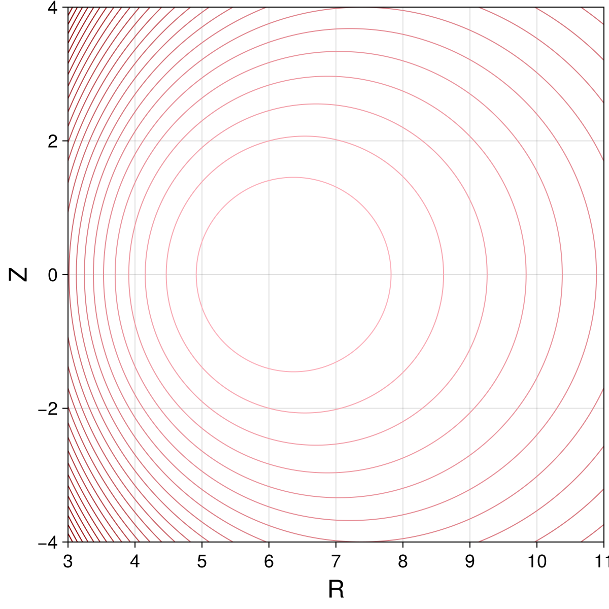
Initial conditions and solver options
Set and initialize initial conditions:
X₀ = from_cartesian(0, [7.0, 0, 0])
E₀ = 1E6
θ₀ = 0.
α₀ = π*5/16
m₀ = md
ics = InitialConditions(X₀, θ₀, α₀, E₀, m₀, 1, aₚ, bₚ, cₚ, b⃗, B, ḡ, DF̄, J)Charged Particle Initial Conditions with
x = [7.0, 0.039356746343052945, -0.0005129847414674947]
X = [7.0, 0.0, 0.0]
ρ = [3.220094336611642e-19, 0.039356746343052945, -0.0005129847414674947]
v = [-0.1862898084737484, -0.007620581643085356, -0.01193182240348234]
v∥ = [0.0, -0.007620581643085356, -0.01193182240348234]
v⟂ = [-0.1862898084737484, 0.0, 0.0]
|v| = 0.20429884217319663
u = 0.0838696856565162
μ = 0.003681107352162368
θ = 0.0
α = 0.9817477042468103
ω = 2.258748612191711e8
M = 3.3435837724e-27
E = 1.0e6
C = 1Obtain charged particle initial conditions:
x₀, v₀ = charged_particle(ics)
p₀ = ChargedParticle3d.TokamakIterCylindrical.charged_particle_3d_pᵢ(0, x₀, v₀)3-element Vector{Float64}:
-0.09391390241426842
-2.0015794622231975
0.617496283226874Obtain Pauli particle initial conditions:
X₀, u₀, μ = pauli_particle(ics)([7.0, 0.0, 0.0], [0.0, -0.007620581643085356, -0.01193182240348234], 0.003681107352162368)Obtain guiding center initial conditions:
q₀, μ = guiding_center(ics)([7.0, 0.0, 0.0, 0.0838696856565162], 0.003681107352162368)Modify guiding center initial conditions for 3D models to avoid singularities:
q3₀ = copy(q₀)
q3₀[2] = sqrt(eps())
q3₀4-element Vector{Float64}:
7.0
1.4901161193847656e-8
0.0
0.0838696856565162Parameters:
parameters = (μ=μ,)(μ = 0.003681107352162368,)Time step size and integration intervals:
Δt1 = 0.01
Δt2 = 0.1
Δt3 = 1.0
Δt4 = 10.0
Δt5 = 50.0
tspan = (0., 10_000.)
tspan_long = (0., 1_000_000.);(0.0, 1.0e6)Nonlinear solver options:
options = (f_abstol = 1E-15, max_iterations = 1_000)(f_abstol = 1.0e-15, max_iterations = 1000)Charged Particle
Integrate charged particle dynamics and convert result to cartesian coordinates:
code = ChargedParticle3d.TokamakIterCylindrical.charged_particle_3d_pode(x₀, p₀; tstep=Δt1, tspan=tspan)
csol = integrate(code, PartitionedGauss(1); options...)
ccar = cartesian_solution(csol, ChargedParticle3d.TokamakIterCylindrical);(t = [0.0, 0.01, 0.02, 0.03, 0.04, 0.05, 0.06, 0.07, 0.08, 0.09 … 9999.91, 9999.92, 9999.93, 9999.94, 9999.95, 9999.96, 9999.97, 9999.98, 9999.99, 10000.0], R = GeometricSolutions.ScalarDataSeries{Float64} with data type Float64
[7.0, 6.998138189492074, 6.996280628902172, 6.994431461831429, 6.9925948162101275, 6.990774795033726, 6.988975467127721, 6.987200857962696, 6.985454940541026, 6.983741626376788 … 5.812720794761562, 5.810679835177497, 5.8086442176933, 5.806620473585017, 5.804615103034896, 5.802634554104654, 5.800685201787807, 5.798773327211355, 5.796905097057727, 5.795086543278283], X = GeometricSolutions.ScalarDataSeries{Float64} with data type Float64
[6.999999078963313, 6.998136792925771, 6.9962786640080274, 6.994428838529505, 6.992591447084654, 6.9907705952690815, 6.988970354434894, 6.987194752496625, 6.985447764809259, 6.983733305139902 … -0.6381944430323053, -0.6379086156885798, -0.6376287104586068, -0.6373557463710503, -0.637090721124051, -0.6368346078425474, -0.6365883519027979, -0.6363528678349314, -0.6361290363142589, -0.6359177012519093], Y = GeometricSolutions.ScalarDataSeries{Float64} with data type Float64
[-0.003590893032779872, -0.0044211679457793526, -0.005243462388523674, -0.006057805225113528, -0.0068642441169705325, -0.0076628454245181304, -0.00845369406446117, -0.00923689332287234, -0.010012564624402137, -0.010780847258038082 … -5.777580020279785, -5.775558219338514, -5.773541138273867, -5.771535235691149, -5.769546941263106, -5.767582634929763, -5.7656486261704964, -5.763751133417898, -5.761896263683662, -5.7600899924670905], Z = GeometricSolutions.ScalarDataSeries{Float64} with data type Float64
[0.039356746343052945, 0.039236749351811186, 0.03902925642914421, 0.03873454381915811, 0.03835308267147437, 0.037885538274460596, 0.03733276884867603, 0.03669582390073414, 0.0359759421388426, 0.03517454895235887 … -0.3993420278704717, -0.3993814065623283, -0.39953620572080323, -0.3998059646778769, -0.4001898527388357, -0.4006866710624316, -0.40129485574611845, -0.4020124821163649, -0.4028372702197846, -0.4037665915064549])Plot solution and energy error:
fig, ax = plot_trajectory_poloidal(ccar.R, ccar.Z, ChargedParticle3d.TokamakIterCylindrical; linewidth = 1)
fig
fig, ax = plot_trajectory_3d(ccar.X, ccar.Y, ccar.Z)
fig
cham = compute_invariant(csol.t, csol.q, csol.p, code.parameters, ChargedParticle3d.TokamakIterCylindrical.hamiltonian)
plot_invariant_error(csol.t, cham; label="H", padding_right=30)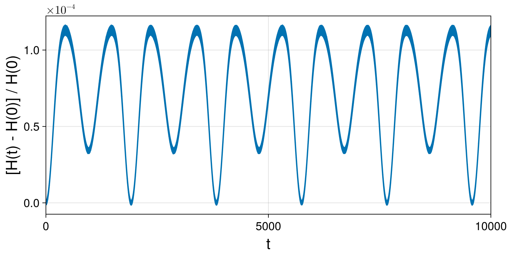
Integrate charged particle dynamics with large time step and convert result to cartesian coordinates:
code_Δt2 = ChargedParticle3d.TokamakIterCylindrical.charged_particle_3d_pode(x₀, p₀; tstep=Δt2, tspan=tspan)
csol_Δt2 = integrate(code_Δt2, PartitionedGauss(1); options...)
ccar_Δt2 = cartesian_solution(csol_Δt2, ChargedParticle3d.TokamakIterCylindrical);(t = [0.0, 0.1, 0.2, 0.3, 0.4, 0.5, 0.6, 0.7, 0.8, 0.9 … 9999.1, 9999.2, 9999.3, 9999.4, 9999.5, 9999.6, 9999.7, 9999.8, 9999.9, 10000.0], R = GeometricSolutions.ScalarDataSeries{Float64} with data type Float64
[7.0, 6.9823604727904875, 6.968469589032989, 6.961286014165952, 6.962345252510484, 6.971420119276566, 6.986571167523979, 7.004574410443037, 7.021621206181316, 7.034127198795177 … 5.99523843384354, 5.99033237229803, 5.99564544109735, 6.009630468715056, 6.028321970063104, 6.0464750435951045, 6.059033388449101, 6.062504191184627, 6.055885614575627, 6.040930679063583], X = GeometricSolutions.ScalarDataSeries{Float64} with data type Float64
[6.999999078963313, 6.9823509143129865, 6.968444109563938, 6.961238573384396, 6.962269601682375, 6.971308380019011, 6.9864127794765185, 7.004355713577435, 7.021325862518705, 7.0337375298295575 … 4.907544710914085, 4.905683460027664, 4.912458346208467, 4.926623267147617, 4.944868310551424, 4.962768930023864, 4.976024063885377, 4.981626982372238, 4.97866623292933, 4.968568439348303], Y = GeometricSolutions.ScalarDataSeries{Float64} with data type Float64
[-0.003590893032779872, -0.01155341419671723, -0.01884423416456251, -0.02570010598568521, -0.0324562574061348, -0.03947087699551416, -0.04704416695580613, -0.05535078236631489, -0.06440105139764138, -0.0740392483569968 … -3.4436737344025405, -3.4377829658971715, -3.4373706887849917, -3.4415173331116717, -3.4480346816773473, -3.4540968428821173, -3.4570319810459744, -3.4550469861684996, -3.447699684994808, -3.4360109331554174], Z = GeometricSolutions.ScalarDataSeries{Float64} with data type Float64
[0.039356746343052945, 0.034442628362586485, 0.02209720960978291, 0.004776677316568601, -0.013990326519652319, -0.030361885376704003, -0.041014504687893485, -0.04385510777256131, -0.038454824575134085, -0.026119772488098592 … 0.4174894940093036, 0.39866140497836255, 0.3800442026715107, 0.3668188541722941, 0.3626373574660347, 0.36861563545745424, 0.3830616692037592, 0.4019752729368029, 0.42014915607442466, 0.43257337154483877])Pauli Particle with Symplectic Integrator
Integrate charged particle dynamics and convert result to cartesian coordinates:
hode = PauliParticle3d.TokamakIterCylindrical.pauli_particle_3d_hode(X₀, u₀, parameters; tstep=Δt3, tspan=tspan)
hsol = integrate(hode, PartitionedGauss(1); options...)
hcar = cartesian_solution(hsol, PauliParticle3d.TokamakIterCylindrical);(t = [0.0, 1.0, 2.0, 3.0, 4.0, 5.0, 6.0, 7.0, 8.0, 9.0 … 9991.0, 9992.0, 9993.0, 9994.0, 9995.0, 9996.0, 9997.0, 9998.0, 9999.0, 10000.0], R = GeometricSolutions.ScalarDataSeries{Float64} with data type Float64
[7.0, 7.000222851570334, 7.000023545091076, 6.9997421687226655, 6.999773286258888, 6.999227742467038, 6.998948725898375, 6.998651900650371, 6.997890128008936, 6.997570414539035 … 5.818221347154978, 5.818045841613945, 5.817391908118367, 5.817111044203757, 5.816764911582666, 5.816183995382106, 5.8160701956906955, 5.815500370362327, 5.815209215890258, 5.814976080462038], X = GeometricSolutions.ScalarDataSeries{Float64} with data type Float64
[7.0, 6.9997239750305145, 6.998027447914062, 6.995252512381805, 6.991792005000536, 6.986759219819506, 6.980999745058539, 6.9742256177850726, 6.9659986295992065, 6.9572219688457 … -0.29819159726890526, -0.3059407007497485, -0.3134529704935109, -0.32083352746439364, -0.3280010975074573, -0.3349774155715942, -0.34181273026922726, -0.34840776193998546, -0.3548683461180924, -0.36113121692549327], Y = GeometricSolutions.ScalarDataSeries{Float64} with data type Float64
[0.0, -0.0835717956640682, -0.16715702220020243, -0.25066454996733273, -0.33417153953342, -0.4175938160310268, -0.5009249716744918, -0.5842135386204934, -0.6673300053997959, -0.75036936414193 … -5.810574964305005, -5.809996359959796, -5.808941026377342, -5.80825677361565, -5.807509734529354, -5.806529634747069, -5.806017273366271, -5.80505440018475, -5.804371342488212, -5.803751464398485], Z = GeometricSolutions.ScalarDataSeries{Float64} with data type Float64
[0.0, -0.007018623191737294, -0.01367042259813922, -0.020830029630676705, -0.02764427969959815, -0.03442324254298268, -0.04158580170690729, -0.04823617487079623, -0.05519959484464243, -0.062220447423388725 … -0.4547196959278097, -0.4536565670053596, -0.452574003099365, -0.4518274552391446, -0.45060477030624835, -0.4498144710641512, -0.4488547475192082, -0.4477537919186303, -0.447069524521696, -0.445905406148589])Plot solution and energy error:
fig, ax = plot_trajectory_poloidal(ccar.R, ccar.Z, ChargedParticle3d.TokamakIterCylindrical; label="Charged Particle Δt=0.01", linewidth = 1)
plot_trajectory_scatter!(fig, ax, hcar.R, hcar.Z; label="Pauli Particle Δt=1.0")
axislegend(ax)
fig
fig, ax = plot_trajectory_3d(ccar.X, ccar.Y, ccar.Z)
plot_trajectory_3d!(fig, ax, hcar.X, hcar.Y, hcar.Z; linewidth = 3, color=:orange)
fig
hham = compute_invariant(hsol.t, hsol.q, hsol.p, hode.parameters, PauliParticle3d.TokamakIterCylindrical.hamiltonian)
plot_invariant_error(hsol.t, hham; label="H", padding_right=30)
Integrate charged particle dynamics with large time step and convert result to cartesian coordinates:
hode_Δt5 = PauliParticle3d.TokamakIterCylindrical.pauli_particle_3d_hode(X₀, u₀, parameters; tstep=Δt5, tspan=tspan_long)
hsol_Δt5 = integrate(hode_Δt5, PartitionedGauss(1); initialguess=NoInitialGuess(), options...);
hcar_Δt5 = cartesian_solution(hsol_Δt5, PauliParticle3d.TokamakIterCylindrical);(t = [0.0, 50.0, 100.0, 150.0, 200.0, 250.0, 300.0, 350.0, 400.0, 450.0 … 999550.0, 999600.0, 999650.0, 999700.0, 999750.0, 999800.0, 999850.0, 999900.0, 999950.0, 1.0e6], R = GeometricSolutions.ScalarDataSeries{Float64} with data type Float64
[7.0, 6.934933643099521, 6.760060923004046, 6.53272145367309, 6.307946008413994, 6.125174794249549, 5.994439637667287, 5.9141563251625175, 5.8722197828367575, 5.86163706151533 … 5.869879724666419, 5.899980631699612, 5.951083080423695, 6.023735058531502, 6.117262620780553, 6.226898317709565, 6.341166393133744, 6.441471119577322, 6.506543096469953, 6.519974225373056], X = GeometricSolutions.ScalarDataSeries{Float64} with data type Float64
[7.0, 5.921999753351545, 3.1950471191619663, -0.028899711944537426, -2.725071358068472, -4.466548875376307, -5.354291569657684, -5.705355751905355, -5.803648655497917, -5.818164876274077 … 2.444836563984447, 3.0150811884632835, 3.904970001467709, 4.952091416227678, 5.861941153332684, 6.203674309299528, 5.52072605259, 3.57707771852304, 0.617981690979267, -2.596838092532535], Y = GeometricSolutions.ScalarDataSeries{Float64} with data type Float64
[0.0, -3.6087703661355115, -5.957356594082742, -6.532657529515088, -5.688951479710553, -4.191384902867386, -2.6953419739857445, -1.5576138104999915, -0.8947778838776671, -0.7125633399359891 … -5.336502802159354, -5.07139594997328, -4.490723674169059, -3.4296026972093525, -1.7488704601724057, 0.5372966808302805, 3.119611366446604, 5.3569641757244115, 6.477129124530034, 5.980509662286398], Z = GeometricSolutions.ScalarDataSeries{Float64} with data type Float64
[0.0, -0.30037711482583385, -0.5352980377229533, -0.6695458216084749, -0.7074536943443954, -0.6789323523568993, -0.6186395236199002, -0.5530980361232437, -0.4975062996440779, -0.45848206660651225 … -0.43957770748712477, -0.43046911494960916, -0.4307828318421729, -0.4349833226773996, -0.42992165140077576, -0.40480952917753443, -0.3450039564441221, -0.24649378356780716, -0.11175254618977393, 0.039620300782340356])Pauli Particle with Variational Integrator
Integrate charged particle dynamics and convert result to cartesian coordinates:
pode = PauliParticle3d.TokamakIterCylindrical.pauli_particle_3d_iode(X₀, u₀, parameters; tstep=Δt3, tspan=tspan)
psol = integrate(pode, VPRKGauss(1); options...)
pcar = cartesian_solution(psol, PauliParticle3d.TokamakIterCylindrical);(t = [0.0, 1.0, 2.0, 3.0, 4.0, 5.0, 6.0, 7.0, 8.0, 9.0 … 9991.0, 9992.0, 9993.0, 9994.0, 9995.0, 9996.0, 9997.0, 9998.0, 9999.0, 10000.0], R = GeometricSolutions.ScalarDataSeries{Float64} with data type Float64
[7.0, 7.000222851570333, 7.000023545091077, 6.999742168722665, 6.999773286258889, 6.999227742467038, 6.998948725898376, 6.99865190065037, 6.997890128008936, 6.997570414539034 … 5.818221347155082, 5.818045841613961, 5.817391908118481, 5.817111044203797, 5.816764911582713, 5.816183995382206, 5.816070195690695, 5.815500370362418, 5.815209215890295, 5.814976080462057], X = GeometricSolutions.ScalarDataSeries{Float64} with data type Float64
[7.0, 6.999723975030514, 6.998027447914063, 6.995252512381804, 6.991792005000537, 6.986759219819506, 6.98099974505854, 6.974225617785072, 6.9659986295992065, 6.957221968845699 … -0.2981915972629808, -0.3059407007438731, -0.3134529704877024, -0.320833527458631, -0.3280010975017551, -0.3349774155659502, -0.3418127302636295, -0.34840776193445605, -0.35486834611260815, -0.3611312169200665], Y = GeometricSolutions.ScalarDataSeries{Float64} with data type Float64
[0.0, -0.0835717956640683, -0.16715702220020268, -0.2506645499673328, -0.3341715395334202, -0.4175938160310271, -0.5009249716744921, -0.5842135386204935, -0.6673300053997961, -0.75036936414193 … -5.810574964305412, -5.809996359960121, -5.808941026377769, -5.808256773616008, -5.807509734529723, -5.806529634747495, -5.806017273366599, -5.805054400185173, -5.804371342488584, -5.803751464398842], Z = GeometricSolutions.ScalarDataSeries{Float64} with data type Float64
[0.0, -0.007018623191737572, -0.013670422598139028, -0.020830029630676945, -0.027644279699598033, -0.034423242542982714, -0.04158580170690688, -0.048236174870796726, -0.055199594844642215, -0.062220447423388524 … -0.45471969592801803, -0.4536565670056202, -0.452574003099635, -0.45182745523933954, -0.45060477030654256, -0.4498144710643571, -0.44885474751944393, -0.44775379191889864, -0.44706952452187604, -0.44590540614886565])Plot solution and energy error:
fig, ax = plot_trajectory_poloidal(ccar.R, ccar.Z, ChargedParticle3d.TokamakIterCylindrical; label="Charged Particle Δt=0.01", linewidth = 1)
plot_trajectory_scatter!(fig, ax, pcar.R, pcar.Z; label="Pauli Particle Δt=1.0")
axislegend(ax)
fig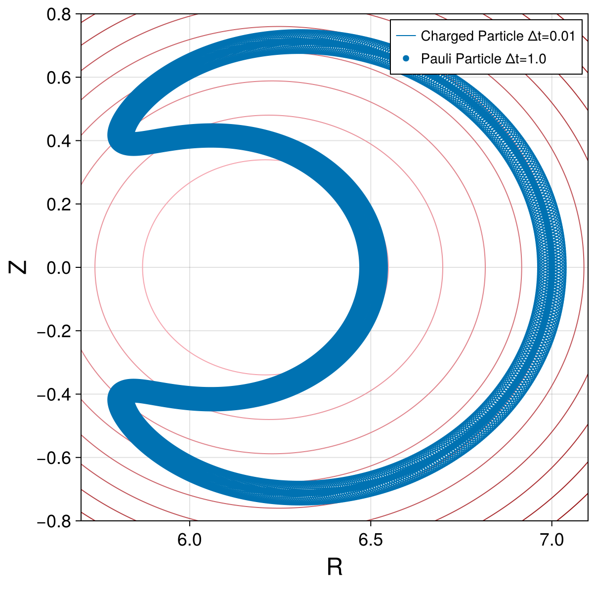
fig, ax = plot_trajectory_3d(ccar.X, ccar.Y, ccar.Z)
plot_trajectory_3d!(fig, ax, pcar.X, pcar.Y, pcar.Z; linewidth = 3, color=:orange)
fig
pham = compute_invariant(psol.t, psol.q, psol.p, pode.parameters, PauliParticle3d.TokamakIterCylindrical.hamiltonian)
plot_invariant_error(psol.t, pham; label="H", padding_right=30)
Integrate charged particle dynamics with large time step and convert result to cartesian coordinates:
pode_Δt5 = PauliParticle3d.TokamakIterCylindrical.pauli_particle_3d_iode(X₀, u₀, parameters; tstep=Δt5, tspan=tspan_long)
psol_Δt5 = integrate(pode_Δt5, VPRKGauss(1); initialguess=NoInitialGuess(), options...);
pcar_Δt5 = cartesian_solution(psol_Δt5, PauliParticle3d.TokamakIterCylindrical);(t = [0.0, 50.0, 100.0, 150.0, 200.0, 250.0, 300.0, 350.0, 400.0, 450.0 … 999550.0, 999600.0, 999650.0, 999700.0, 999750.0, 999800.0, 999850.0, 999900.0, 999950.0, 1.0e6], R = GeometricSolutions.ScalarDataSeries{Float64} with data type Float64
[7.0, 6.934933643099525, 6.760060923004051, 6.5327214536730835, 6.307946008413988, 6.12517479424957, 5.994439637667272, 5.91415632516254, 5.872219782836732, 5.861637061515372 … 5.869879725055876, 5.899980632510652, 5.951083081654463, 6.023735060196836, 6.117262622828751, 6.2268983199941115, 6.341166395339714, 6.441471121296606, 6.50654309728594, 6.519974225082848], X = GeometricSolutions.ScalarDataSeries{Float64} with data type Float64
[7.0, 5.92199975335155, 3.195047119161973, -0.028899711944546103, -2.725071358068459, -4.466548875376317, -5.354291569657663, -5.705355751905371, -5.803648655497886, -5.818164876274115 … 2.444836556351372, 3.015081188921988, 3.9049700086879304, 4.952091427169879, 5.861941162403412, 6.203674308786264, 5.52072603545327, 3.577077683228333, 0.6179816448298077, -2.5968381355243793], Y = GeometricSolutions.ScalarDataSeries{Float64} with data type Float64
[0.0, -3.608770366135512, -5.957356594082745, -6.532657529515082, -5.688951479710553, -4.191384902867407, -2.695341973985752, -1.557613810500015, -0.8947778838776942, -0.7125633399360253 … -5.336502806084712, -5.071395950644119, -4.490723669521625, -3.429602684334611, -1.7488704369330021, 0.5372967132327933, 3.1196114012572265, 5.3569642013595695, 6.477129129752838, 5.980509643302229], Z = GeometricSolutions.ScalarDataSeries{Float64} with data type Float64
[0.0, -0.30037711482582374, -0.535298037722991, -0.6695458216084015, -0.7074536943444676, -0.6789323523568545, -0.6186395236199089, -0.5530980361232616, -0.4975062996440688, -0.4584820666065177 … -0.4395777071692146, -0.4304691148698119, -0.4307828319345358, -0.43498332269558027, -0.4299216511611319, -0.4048095283517641, -0.34500395488805535, -0.24649378119124854, -0.11175254328089473, 0.039620303843556])Guiding Center 4D with Variational Lobatto-IIIA-IIIB
Integrate charged particle dynamics and convert result to cartesian coordinates:
vode = GuidingCenter4d.TokamakIterCylindrical.guiding_center_4d_iode(q₀, parameters; tstep=10., tspan=(0,1800))
vsol = integrate(vode, VPRKLobattoIIIAIIIB(2); options...)
vcar = cartesian_solution(vsol, GuidingCenter4d.TokamakIterCylindrical);(t = [0.0, 10.0, 20.0, 30.0, 40.0, 50.0, 60.0, 70.0, 80.0, 90.0 … 1710.0, 1720.0, 1730.0, 1740.0, 1750.0, 1760.0, 1770.0, 1780.0, 1790.0, 1800.0], R = GeometricSolutions.ScalarDataSeries{Float64} with data type Float64
[7.0, 6.999975446732488, 6.986595422595247, 6.97324261255884, 6.9474501326714755, 6.921615858505039, 6.885565379266097, 6.848633166295622, 6.805344256048963, 6.759190410777764 … 6.610950721147789, 6.429402248457951, 6.662279029787291, 6.570709411857452, 6.701513921013969, 6.7168198766486125, 6.7423138056276475, 6.854720355294138, 6.789033466161044, 6.963553294175849], X = GeometricSolutions.ScalarDataSeries{Float64} with data type Float64
[7.0, 6.950128713332335, 6.7822583195602055, 6.531285644981906, 6.153238471863514, 5.730539029541307, 5.179658757052741, 4.618907298569217, 3.9559230186114367, 3.293804286114743 … -1.990951994170532, -1.6825436604379993, -1.3051972422024871, 0.10446765824120488, -0.6899887621887133, 2.041288779033678, 0.09623329995608253, 3.854252802365312, 1.2716520211229279, 5.247147460317956], Y = GeometricSolutions.ScalarDataSeries{Float64} with data type Float64
[0.0, -0.833886756682899, -1.677345428283998, -2.443035070820665, -3.225634767659798, -3.8819696706198292, -4.536754980449653, -5.056626505261034, -5.537452800174354, -5.902330754364942 … 6.304028838318624, 6.2053412559823045, 6.533178554860605, 6.569878894123826, 6.665898614710346, 6.399125672772264, 6.741626999881908, 5.668503019734834, 6.668873708642908, 4.578047401513679], Z = GeometricSolutions.ScalarDataSeries{Float64} with data type Float64
[0.0, -0.06911304859628964, -0.14034085676730837, -0.204324749917824, -0.27372725405823906, -0.3307093984612457, -0.39412137888794874, -0.44313224592326605, -0.49705722303887323, -0.537624067558192 … 0.6747512404379623, 0.6286883610790612, 0.6682365203827609, 0.54664650862977, 0.6536832072346714, 0.44956765493609846, 0.6192762815722406, 0.34275805583089536, 0.5441071835651219, 0.2377794676730749])Plot solution and energy error:
fig, ax = plot_trajectory_poloidal(ccar.R, ccar.Z, ChargedParticle3d.TokamakIterCylindrical; label="Charged Particle Δt=0.01", linewidth = 1)
plot_trajectory_scatter!(fig, ax, vcar.R, vcar.Z; label="Guiding Center Δt=1.0", color=:orange, markersize=10)
axislegend(ax)
fig
fig, ax = plot_trajectory_3d(vcar.X, vcar.Y, vcar.Z)
fig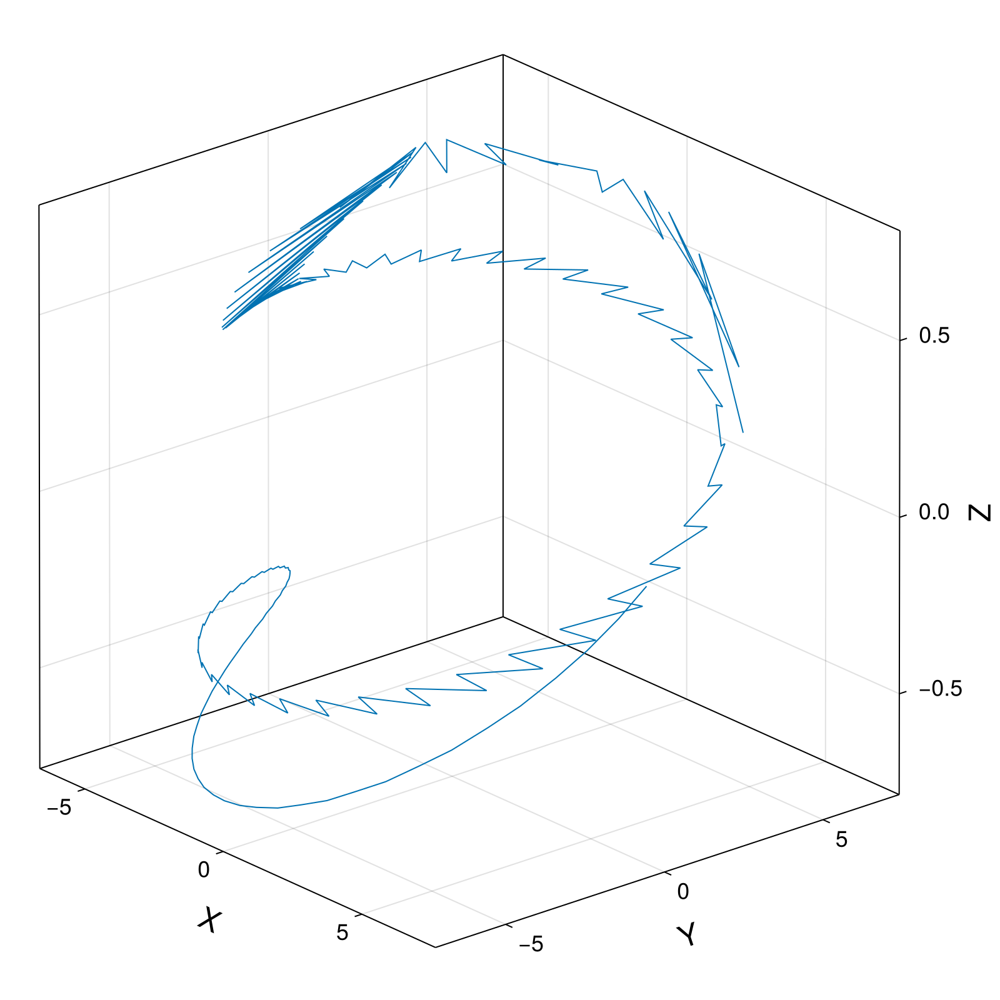
vham = compute_invariant(vsol.t, vsol.q, vsol.p, vode.parameters, GuidingCenter4d.TokamakIterCylindrical.hamiltonian)
plot_invariant_error(vsol.t, vham; label="H", padding_right=30)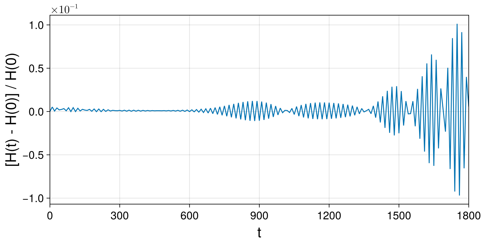
Guiding Center 4D with Projected Variational Midpoint
Integrate charged particle dynamics and convert result to cartesian coordinates:
gode = GuidingCenter4d.TokamakIterCylindrical.guiding_center_4d_iode(q₀, parameters; tstep=Δt3, tspan=tspan)
gsol = integrate(gode, SymmetricProjection(VPRKGauss(1)); options...)
gcar = cartesian_solution(gsol, GuidingCenter4d.TokamakIterCylindrical);(t = [0.0, 1.0, 2.0, 3.0, 4.0, 5.0, 6.0, 7.0, 8.0, 9.0 … 9991.0, 9992.0, 9993.0, 9994.0, 9995.0, 9996.0, 9997.0, 9998.0, 9999.0, 10000.0], R = GeometricSolutions.ScalarDataSeries{Float64} with data type Float64
[7.0, 6.999966980644359, 6.999867928673001, 6.999702862370504, 6.999471812204128, 6.999174820813256, 6.9988119429946245, 6.998383245683348, 6.997888807929742, 6.997328720871967 … 5.8181164666359075, 5.817693702767434, 5.817281373999942, 5.816879413119187, 5.816487753629906, 5.816106329754858, 5.815735076433774, 5.815373929322237, 5.815022824790466, 5.814681699922031], X = GeometricSolutions.ScalarDataSeries{Float64} with data type Float64
[7.0, 6.999467968662804, 6.997872007411833, 6.995212514472805, 6.991490153368169, 6.986705852636604, 6.980860805440543, 6.973956469061973, 6.965994564286786, 6.9569770746780675 … -0.29790757748072816, -0.30559630266835414, -0.3131004191060714, -0.32042035863592216, -0.3275565502941147, -0.33450942020810076, -0.34127939149732894, -0.3478668841776309, -0.3542723150691399, -0.3604960977077622], Y = GeometricSolutions.ScalarDataSeries{Float64} with data type Float64
[0.0, -0.08358161146273706, -0.16714779910823993, -0.25068314430947364, -0.3341722388171631, -0.4175996899420608, -0.5009501257293054, -0.5842082001222255, -0.6673585981129624, -0.7503860408773043 … -5.810484514618334, -5.809661859266448, -5.808849344908357, -5.808047597992069, -5.807257226478443, -5.806478819973992, -5.805712949862521, -5.8049601694355575, -5.804221014021575, -5.803496001113952], Z = GeometricSolutions.ScalarDataSeries{Float64} with data type Float64
[0.0, -0.006911054633901765, -0.013821308013955605, -0.020729959099024767, -0.027636207273302196, -0.0345392525587437, -0.04143829582722338, -0.04833253901231867, -0.05522118532063341, -0.0621034394425664 … -0.45442713326729195, -0.4534383734554842, -0.45245729591532696, -0.45148391026405027, -0.4505182254638881, -0.44956024983182263, -0.4486099910491838, -0.44766745617110404, -0.4467326516358282, -0.44580558327388187])Plot solution and energy error:
fig, ax = plot_trajectory_poloidal(ccar.R, ccar.Z, ChargedParticle3d.TokamakIterCylindrical; label="Charged Particle Δt=0.01", linewidth = 1)
plot_trajectory_scatter!(fig, ax, gcar.R, gcar.Z; label="Guiding Center 4D Δt=1.0")
axislegend(ax)
fig
fig, ax = plot_trajectory_3d(ccar.X, ccar.Y, ccar.Z)
plot_trajectory_3d!(fig, ax, gcar.X, gcar.Y, gcar.Z; linewidth = 3, color=:orange)
fig
gham = compute_invariant(gsol.t, gsol.q, gsol.p, gode.parameters, GuidingCenter4d.TokamakIterCylindrical.hamiltonian)
plot_invariant_error(gsol.t, gham; label="H", padding_right=30)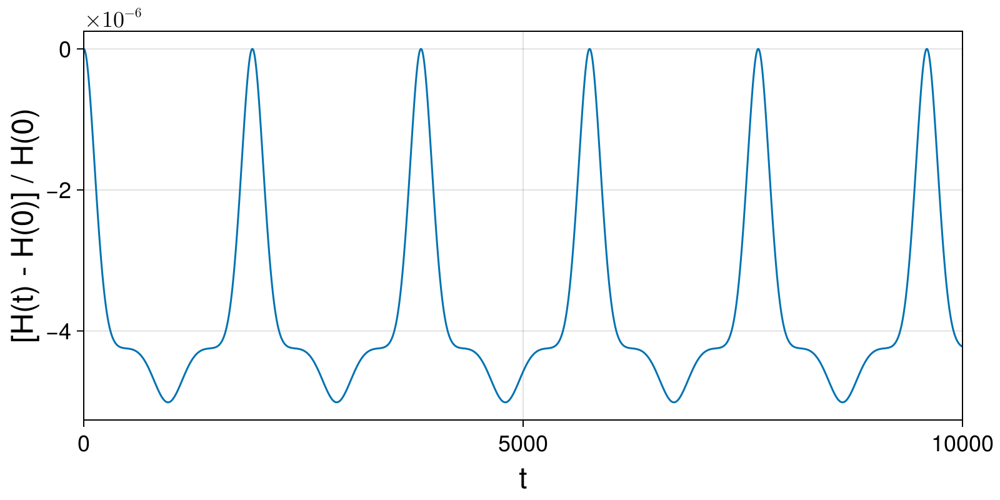
Integrate charged particle dynamics with large time step and convert result to cartesian coordinates:
gode_Δt5 = GuidingCenter4d.TokamakIterCylindrical.guiding_center_4d_iode(q₀, parameters; tstep=Δt5, tspan=tspan_long)
gsol_Δt5 = integrate(gode_Δt5, SymmetricProjection(VPRKGauss(1)); options...);
gcar_Δt5 = cartesian_solution(gsol_Δt5, GuidingCenter4d.TokamakIterCylindrical);(t = [0.0, 50.0, 100.0, 150.0, 200.0, 250.0, 300.0, 350.0, 400.0, 450.0 … 999550.0, 999600.0, 999650.0, 999700.0, 999750.0, 999800.0, 999850.0, 999900.0, 999950.0, 1.0e6], R = GeometricSolutions.ScalarDataSeries{Float64} with data type Float64
[7.0, 6.934490790122661, 6.760561825985607, 6.532769106094025, 6.308503082183192, 6.124984759284241, 5.99469494123765, 5.913779212005127, 5.872385930862023, 5.8612395027292425 … 5.885906861651208, 5.928973904987684, 5.993384694006625, 6.079246108560728, 6.183720705344265, 6.298060697550609, 6.406175956529455, 6.487005231702079, 6.521347811961945, 6.5001963343162], X = GeometricSolutions.ScalarDataSeries{Float64} with data type Float64
[7.0, 5.921525258705457, 3.19506335697809, -0.029200955475633818, -2.7255974771570304, -4.466593640031566, -5.354651637130242, -5.705041394936486, -5.803837203863371, -5.817772938720472 … 2.7319067489024573, 3.5150741405869383, 4.532544219708467, 5.545280780792384, 6.169366478842251, 5.93465088863286, 4.484023157335487, 1.8541323003877532, -1.3750346083750227, -4.269436836994277], Y = GeometricSolutions.ScalarDataSeries{Float64} with data type Float64
[0.0, -3.60869798248749, -5.9579162756680075, -6.532703842800149, -5.689317140960773, -4.191059478973521, -2.6951944797136043, -1.5573333780553025, -0.8946453107447878, -0.7124931872274287 … -5.213500273264976, -4.774618869836827, -3.9213139362642537, -2.491404084171286, -0.4210926399747834, 2.1084324461743766, 4.575218760944133, 6.216384020376231, 6.374735846319579, 4.901475439046295], Z = GeometricSolutions.ScalarDataSeries{Float64} with data type Float64
[0.0, -0.29965282523877784, -0.5344056554205736, -0.66902040420985, -0.7073468661841429, -0.6790167850110135, -0.6187513570359352, -0.5531367315667767, -0.49753714691087825, -0.45844843545420966 … -0.43230132447517805, -0.4299147728379913, -0.43361258543339554, -0.4336643091405116, -0.41759732774090025, -0.372290898379196, -0.28847820534293767, -0.16634286823326644, -0.018655060315251777, 0.13205769178771418])Guiding Centre 3D (Modified Poisson Structure)
Integrate charged particle dynamics and convert result to cartesian coordinates:
g3ode = GuidingCenter3d.TokamakIterCylindrical.hode(q3₀, parameters; tstep=Δt3, tspan=(0., 19_189.))
g3sol = integrate(g3ode, PartitionedGauss(1); initialguess=NoInitialGuess(), options...)
g3car = cartesian_solution(g3sol, GuidingCenter3d.TokamakIterCylindrical);(t = [0.0, 1.0, 2.0, 3.0, 4.0, 5.0, 6.0, 7.0, 8.0, 9.0 … 19180.0, 19181.0, 19182.0, 19183.0, 19184.0, 19185.0, 19186.0, 19187.0, 19188.0, 19189.0], R = GeometricSolutions.ScalarDataSeries{Float64} with data type Float64
[7.0, 6.999967048464549, 6.999867996632135, 6.99970293046583, 6.999471880432846, 6.999174889172546, 6.998812011481653, 6.998383314295269, 6.997888876663705, 6.997328789725116 … 6.996729355129199, 6.997348053777362, 6.997900461294667, 6.998386156191382, 6.998804511604133, 6.999154472115239, 6.9994339846696905, 6.999638240933113, 6.9997522941480685, 6.999693242766809], X = GeometricSolutions.ScalarDataSeries{Float64} with data type Float64
[7.0, 6.9994680364544415, 6.997872075244845, 6.99521258227542, 6.991490221068668, 6.9867059201634465, 6.980860872722475, 6.973956536028124, 6.965994630866776, 6.956977140802106 … -6.97549487157868, -6.969114195085563, -6.961672703624186, -6.953170879458837, -6.943609259126749, -6.932988216534413, -6.9213074097568485, -6.908564072091894, -6.894745832347838, -6.879774519951496], Y = GeometricSolutions.ScalarDataSeries{Float64} with data type Float64
[0.0, -0.08358161425869015, -0.1671478052000085, -0.25068315369720573, -0.33417225149810087, -0.4175997059105449, -0.5009501449767955, -0.5842082226373106, -0.6673586238813813, -0.7503860698819746 … 0.5446952960198916, 0.6279547129839319, 0.7111427661180515, 0.7942439878379938, 0.8772428672948283, 0.9601238013536156, 1.042870962964242, 1.1254678874735886, 1.20789572677167, 1.2901193927158423], Z = GeometricSolutions.ScalarDataSeries{Float64} with data type Float64
[1.4901161193847656e-8, -0.006911041195310806, -0.013821296117955892, -0.02072994874636066, -0.027636198464222154, -0.03453924529300102, -0.0414382901040772, -0.04833253483053549, -0.05522118267848888, -0.062103438337847566 … 0.06854898992250012, 0.06167302553324288, 0.05478993277897418, 0.04790050815115227, 0.0410055512695129, 0.03410586594719816, 0.027202263032981518, 0.020295569095580914, 0.01338666218789378, 0.0064767682476896205])Plot solution and energy error:
fig, ax = plot_trajectory_poloidal(ccar.R, ccar.Z, ChargedParticle3d.TokamakIterCylindrical; label="Charged Particle Δt=0.01", linewidth = 1)
plot_trajectory_scatter!(fig, ax, g3car.R, g3car.Z; label="Guiding Center 3D Δt=1.0", color=:orange)
axislegend(ax)
fig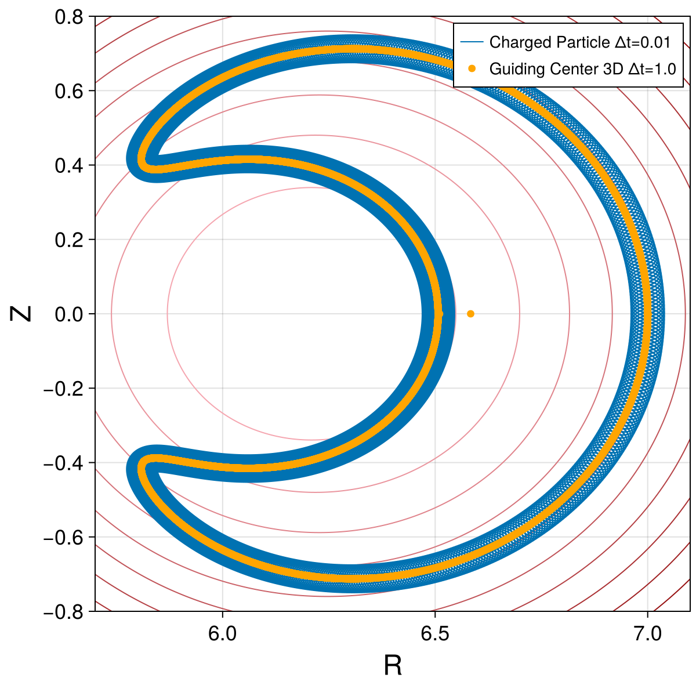
fig, ax = plot_trajectory_3d(g3car.X, g3car.Y, g3car.Z)
fig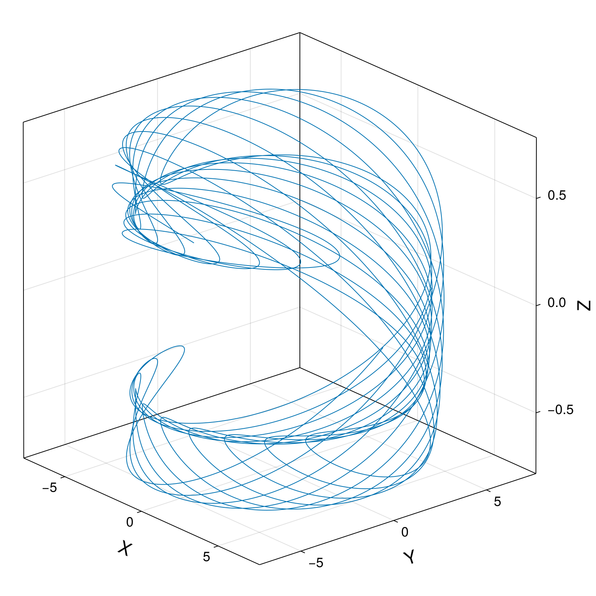
g3ham = compute_invariant(g3sol.t, g3sol.q, g3sol.p, g3ode.parameters, GuidingCenter3d.TokamakIterCylindrical.hamiltonian)
plot_invariant_error(g3sol.t, g3ham; label="H", padding_right=40)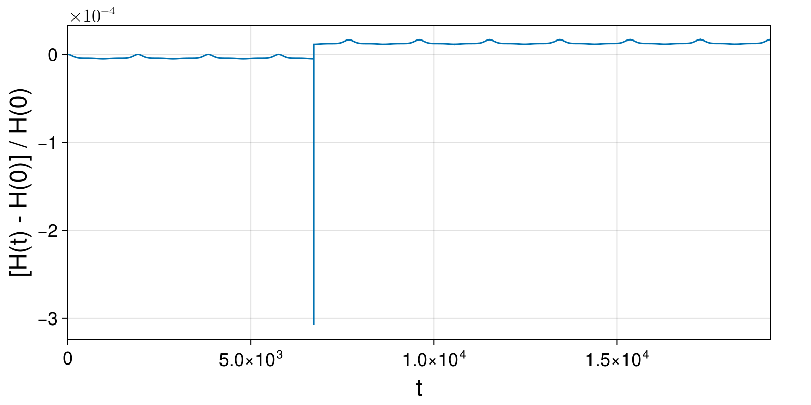
fig = plot_invariant_error(g3sol.t, g3ham; label="H", padding_right=40)
ylims!(-0.1, 0.2)
fig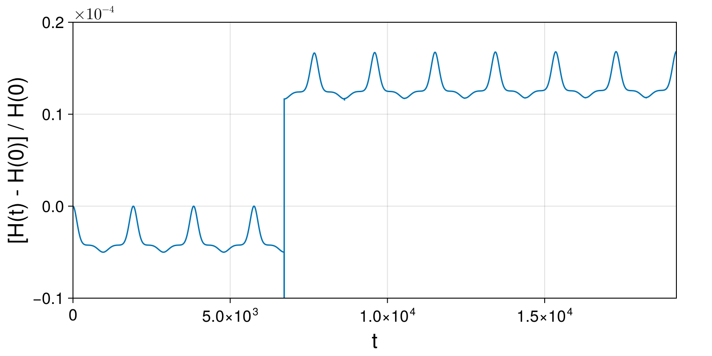
Compute and plot constraints:
g3g1 = compute_invariant(g3sol.t, g3sol.q, g3sol.p, g3ode.parameters, GuidingCenter3d.TokamakIterCylindrical.g₁)
println()
println("g₁(0) = ", g3g1[begin])
println("g₁(T) = ", g3g1[end])
println()
plot_invariant(g3sol.t, g3g1; label="g₁", padding_right=40)
g3g2 = compute_invariant(g3sol.t, g3sol.q, g3sol.p, g3ode.parameters, GuidingCenter3d.TokamakIterCylindrical.g₂)
println()
println("g₂(0) = ", g3g2[begin])
println("g₂(T) = ", g3g2[end])
println()
plot_invariant(g3sol.t, g3g2; label="g₂", padding_right=40)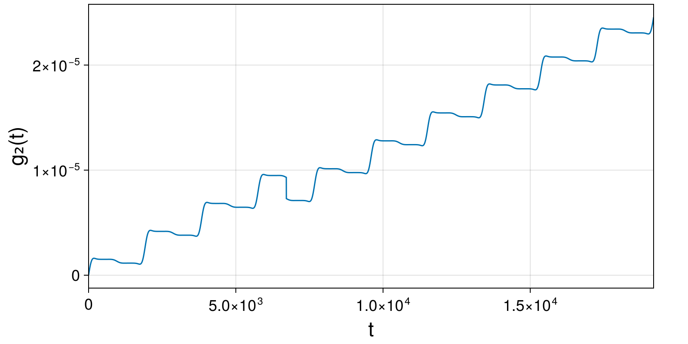
Integrate charged particle dynamics with large time step and convert result to cartesian coordinates:
g3ode_Δt4 = GuidingCenter3d.TokamakIterCylindrical.hode(q3₀, parameters; tstep=Δt4, tspan=(0, 100*Δt4))
g3sol_Δt4 = integrate(g3ode_Δt4, PartitionedGauss(1); initialguess=MidpointExtrapolation(5, 1.0), options...)
g3car_Δt4 = cartesian_solution(g3sol_Δt4, GuidingCenter3d.TokamakIterCylindrical);(t = [0.0, 10.0, 20.0, 30.0, 40.0, 50.0, 60.0, 70.0, 80.0, 90.0 … 910.0, 920.0, 930.0, 940.0, 950.0, 960.0, 970.0, 980.0, 990.0, 1000.0], R = GeometricSolutions.ScalarDataSeries{Float64} with data type Float64
[7.0, 6.99674041928076, 6.987001044862499, 6.970964859238483, 6.948919068401852, 6.9212522030137, 6.888441382069891, 6.851037050971837, 6.809645929038752, 6.7649129624996736 … 6.4818921726795296, 6.491479639647395, 6.498934575460943, 6.504190565306312, 6.507319107253619, 6.507650469051607, 6.505762969817106, 6.501783018755088, 6.495518974515063, 6.487057776923948], X = GeometricSolutions.ScalarDataSeries{Float64} with data type Float64
[7.0, 6.947323360969284, 6.79057021946078, 6.53358432702208, 6.1825844381341275, 5.745917155342139, 5.233722176502308, 4.657535502826385, 4.029852518285053, 3.3636743617999074 … 6.089025793440141, 6.293334980552191, 6.4306999267665725, 6.498443302698466, 6.49515634239603, 6.420025704665758, 6.274562873857903, 6.06061592489361, 5.78131654698461, 5.440982930589337], Y = GeometricSolutions.ScalarDataSeries{Float64} with data type Float64
[0.0, -0.8301051818459902, -1.6450956493414053, -2.430355305388337, -3.1722430368022856, -3.8585189000012554, -4.478702585950632, -5.024347889398251, -5.489222746413709, -5.869390273100443 … -2.222316589747019, -1.5916163905020657, -0.939281144283276, -0.27336706354843493, 0.3976758120135767, 1.0643235310649426, 1.7189568236135353, 2.3541701369905277, 2.9611054915094073, 3.5323679522644507], Z = GeometricSolutions.ScalarDataSeries{Float64} with data type Float64
[1.4901161193847656e-8, -0.06864965493154168, -0.13651462617809573, -0.20283050383172288, -0.2668729657049994, -0.32797558188792136, -0.3855452977653814, -0.4390749340090802, -0.48815229228033735, -0.5324656434568775 … -0.14149446053877962, -0.11288321542963162, -0.0834986290962115, -0.05353544806280754, -0.023199342637611756, 0.0073169658911203216, 0.03776534945730328, 0.0679503121118831, 0.09766197421663261, 0.12670000114312222])g3ode_Δt5 = GuidingCenter3d.TokamakIterCylindrical.hode(q3₀, parameters; tstep=Δt5, tspan=(0, 100*Δt4))
g3sol_Δt5 = integrate(g3ode_Δt5, PartitionedGauss(1); initialguess=MidpointExtrapolation(5, 1.0), options...)
g3car_Δt5 = cartesian_solution(g3sol_Δt5, GuidingCenter3d.TokamakIterCylindrical);(t = [0.0, 50.0, 100.0, 150.0, 200.0, 250.0, 300.0, 350.0, 400.0, 450.0 … 550.0, 600.0, 650.0, 700.0, 750.0, 800.0, 850.0, 900.0, 950.0, 1000.0], R = GeometricSolutions.ScalarDataSeries{Float64} with data type Float64
[7.0, 6.934619152458259, 6.760788742796952, 6.533242903638289, 6.3092196794303455, 6.125804940205805, 5.9955119643221035, 5.914568689552602, 5.8731691999770765, 5.862053086797445 … 5.909622215124914, 5.965292556914566, 6.042588057746517, 6.14023543568855, 6.252193788635922, 6.365338211881187, 6.460177345259083, 6.518190370292393, 6.516865981924099, 6.4626442745092065], X = GeometricSolutions.ScalarDataSeries{Float64} with data type Float64
[7.0, 5.92162513214295, 3.195200312913236, -0.028545672450903396, -2.7244789744100397, -4.465687278381883, -5.354312851498744, -5.705180875557723, -5.804245482919296, -5.818258773916515 … -5.660249671187825, -5.275538981951716, -4.424681212725221, -2.9040829870855083, -0.6536887005817853, 2.0772755613649214, 4.662877579853746, 6.2831957898311925, 6.343179486770121, 4.832245917540089], Y = GeometricSolutions.ScalarDataSeries{Float64} with data type Float64
[0.0, -3.6087807614226017, -5.958100316803096, -6.533180541093625, -5.690647351691085, -4.193223497161589, -2.6976837477000295, -1.5598185665667645, -0.897134786735144, -0.7152141163140915 … -1.6985901169252164, -2.784493443965736, -4.115223760790814, -5.410064067070358, -6.217927166941513, -6.016847745604905, -4.471181500173748, -1.7344325786896582, 1.4945287635165452, 4.291290063752831], Z = GeometricSolutions.ScalarDataSeries{Float64} with data type Float64
[1.4901161193847656e-8, -0.29976607658364923, -0.5344486523893384, -0.6689673866811845, -0.7073539679622577, -0.6791866096266572, -0.6190686446113949, -0.5535501580705947, -0.49800746440322646, -0.4589515181934227 … -0.43022269297811727, -0.43235322119249836, -0.4351651243839282, -0.4271611778820714, -0.3950578450456418, -0.3273407626008705, -0.21975171984051295, -0.07989717107612604, 0.07394990689777575, 0.21422771350505138])Plot solution, energy error and constraints:
fig, ax = plot_trajectory_poloidal(ccar.R, ccar.Z, ChargedParticle3d.TokamakIterCylindrical; label="Charged Particle Δt=0.01", linewidth = 1)
plot_trajectory_scatter!(fig, ax, g3car.R, g3car.Z; label="Guiding Center 3D Δt=1.0", markersize=12, color=Makie.wong_colors()[6])
plot_trajectory_scatter!(fig, ax, g3car_Δt4.R, g3car_Δt4.Z; label="Guiding Center 3D Δt=10.0", markersize=12, color=Makie.wong_colors()[3])
plot_trajectory_scatter!(fig, ax, g3car_Δt5.R, g3car_Δt5.Z; label="Guiding Center 3D Δt=50.0", markersize=12, color=Makie.wong_colors()[2])
axislegend(ax)
fig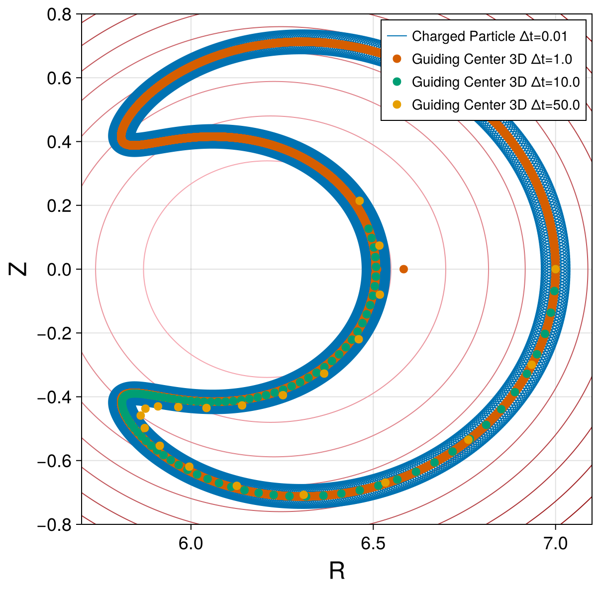
g3ham_Δt4 = compute_invariant(g3sol_Δt4.t, g3sol_Δt4.q, g3sol_Δt4.p, g3ode_Δt4.parameters, GuidingCenter3d.TokamakIterCylindrical.hamiltonian)
plot_invariant_error(g3sol_Δt4.t, g3ham_Δt4; label="H", padding_right=40)
g3g1_Δt4 = compute_invariant(g3sol_Δt4.t, g3sol_Δt4.q, g3sol_Δt4.p, g3ode_Δt4.parameters, GuidingCenter3d.TokamakIterCylindrical.g₁)
plot_invariant(g3sol_Δt4.t, g3g1_Δt4; label="g₁", padding_right=40)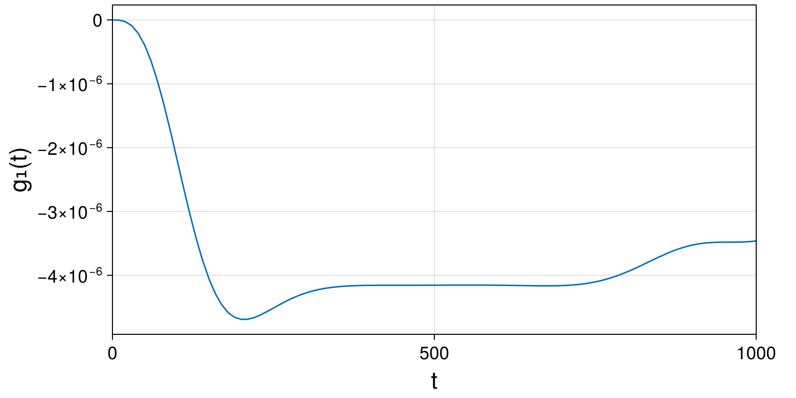
g3g2_Δt4 = compute_invariant(g3sol_Δt4.t, g3sol_Δt4.q, g3sol_Δt4.p, g3ode_Δt4.parameters, GuidingCenter3d.TokamakIterCylindrical.g₂)
plot_invariant(g3sol_Δt4.t, g3g2_Δt4; label="g₂", padding_right=40)
g3ham_Δt5 = compute_invariant(g3sol_Δt5.t, g3sol_Δt5.q, g3sol_Δt5.p, g3ode_Δt5.parameters, GuidingCenter3d.TokamakIterCylindrical.hamiltonian)
plot_invariant_error(g3sol_Δt5.t, g3ham_Δt5; label="H", padding_right=40)
g3g1_Δt5 = compute_invariant(g3sol_Δt5.t, g3sol_Δt5.q, g3sol_Δt5.p, g3ode_Δt5.parameters, GuidingCenter3d.TokamakIterCylindrical.g₁)
plot_invariant(g3sol_Δt5.t, g3g1_Δt5; label="g₁", padding_right=40)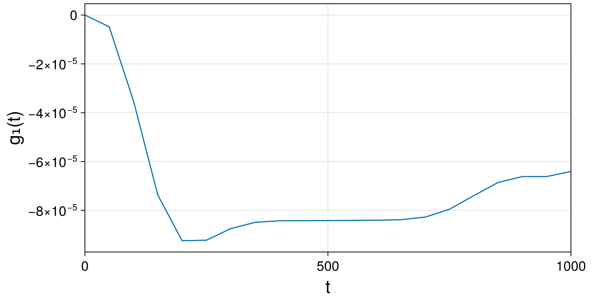
g3g2_Δt5 = compute_invariant(g3sol_Δt5.t, g3sol_Δt5.q, g3sol_Δt5.p, g3ode_Δt5.parameters, GuidingCenter3d.TokamakIterCylindrical.g₂)
plot_invariant(g3sol_Δt5.t, g3g2_Δt5; label="g₂", padding_right=40)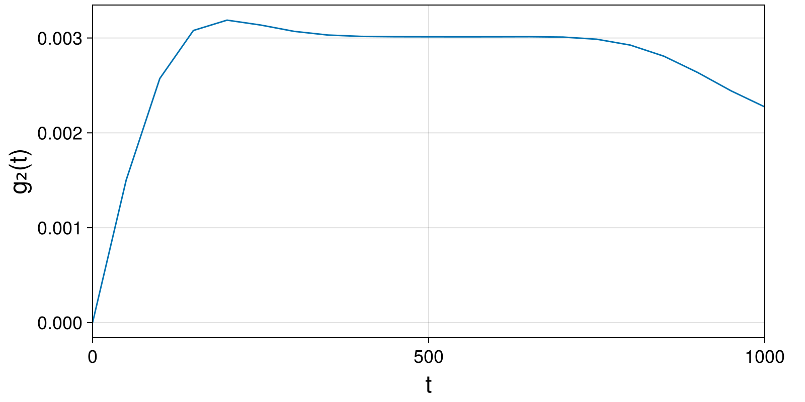